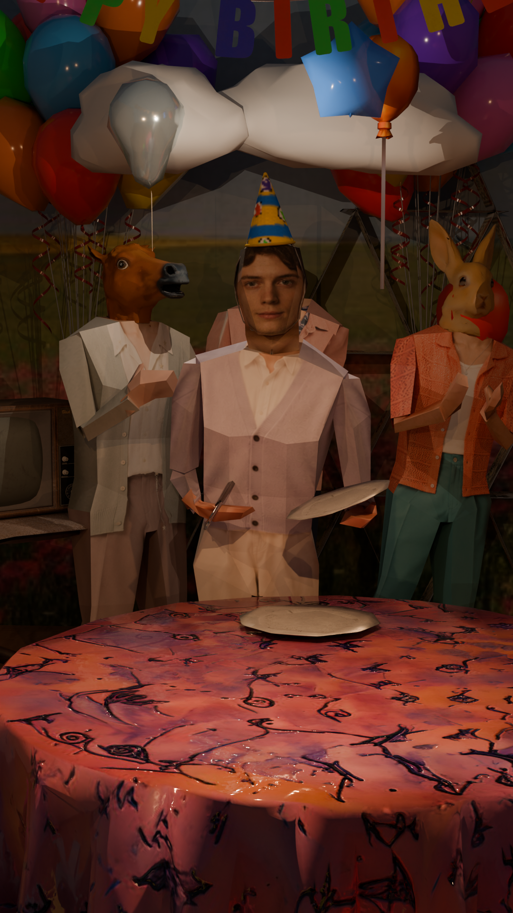
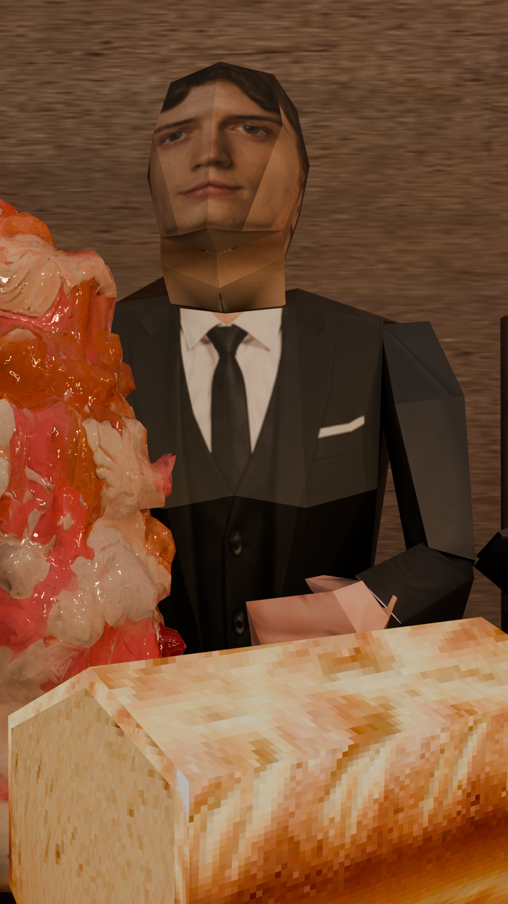
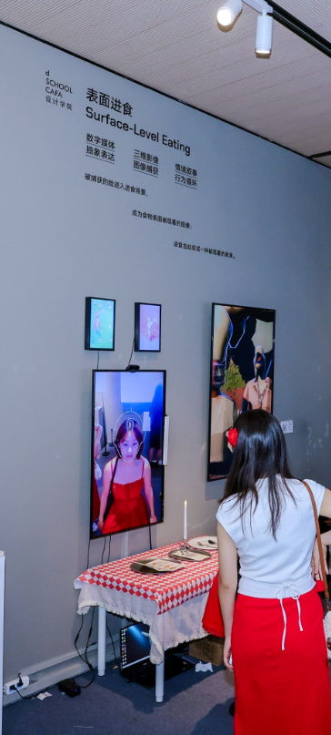
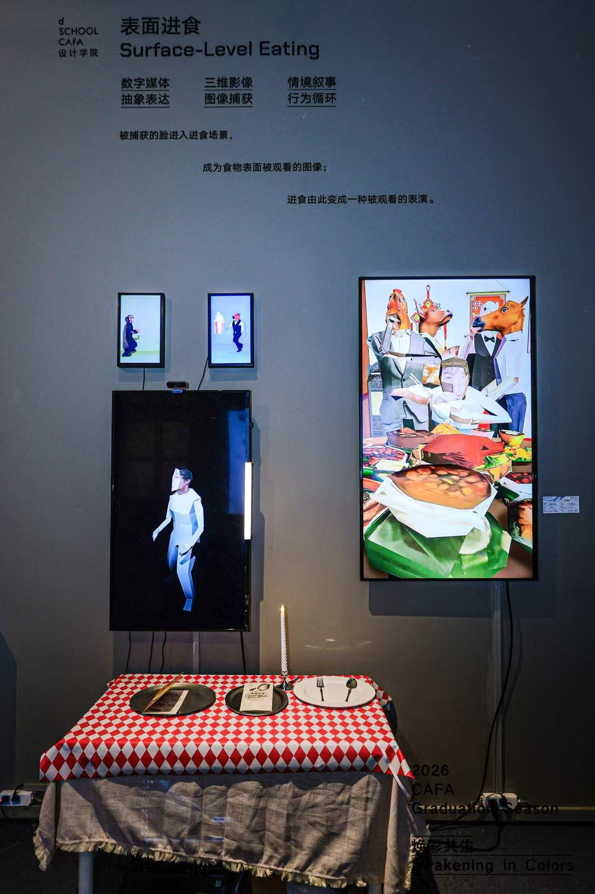

ARCHIVE / 01 — MEDIA ART
Surface-Level
Eating
Interactive Installation · 2026




Process preview
WeChat preview
People value their appearance most when out in public; it's key to forming a first impression. Food is a common consumable in life, and I drew an analogy, proposing the concept that "faces can also be consumed," thus overlaying images of faces onto the food's surface.
02 / MEDIA ART
I WANT TO
BACK HOME
RPG / INTERACTIVE GAME
A playable RPG about searching for a way home through an unfamiliar world, where exploration and small encounters gradually reveal the path forward.
PLAY THE GAME
CONTROLS
Arrow Keys — Move
Enter / Z — Interact
Arrow Keys — Move
Enter / Z — Interact
03 / MEDIA ART
IG FILTERS
AR FILTER / INTERACTIVE MEDIA
IG filter Virtual Jewelry is a series of four AR face filters exploring jewelry beyond physical materials. Inspired by metallic accessories and futuristic fashion, I designed digital ornaments that transform the face into a space for wearable, virtual objects.